第一次微调实战 Day1：从 0 到跑通 Qwen + LLaMA-Factory + 第一份 Java 面试训练数据
今天的目标非常明确：不训练大模型，只完成一次完整环境搭建，让你理解大模型微调的第一条链路。
Day1 目标与总览
我为什么要学这个
会调 API 不等于会大模型。Prompt 解决不了「让模型稳定用某种口吻、某种格式回答」的问题——那需要微调。而微调的第一道门槛从来不是算法，是环境、工具、数据这三座山。Day1 的目标就是把这三座山搬完。
| 任务 | 预计时间 |
|---|---|
| 注册 Google Colab | 10 分钟 |
| 开启 GPU | 5 分钟 |
| 测试环境 | 10 分钟 |
| 安装 LLaMA-Factory | 30 分钟 |
| 下载 Qwen 模型 | 20 分钟 |
| 准备训练数据 | 1 小时 |
| 理解流程 | 30 分钟 |
总计：约 3 小时。其中大部分时间在等下载——正好用来看懂每一步在干什么。
一、准备 Google Colab
1.1 为什么用 Colab，不用自己的 Mac
微调需要 NVIDIA GPU（显存以 GB 计）。Mac 的 M 系列芯片没有 CUDA，主流训练工具链跑不动——我本机实测 nvidia-smi 直接报错（见第二部分）。Colab 免费提供一张 T4（16GB 显存），浏览器里就能用，是零成本练手的最短路径。
1.2 打开 Colab
浏览器访问：colab.research.google.com，登录 Google 账号：
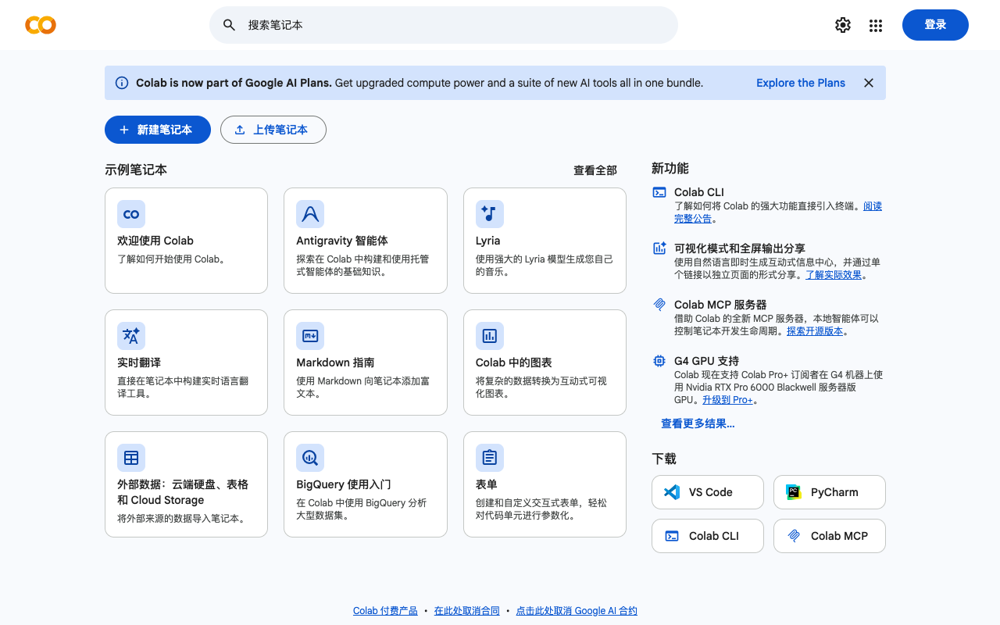
1.3 新建笔记本
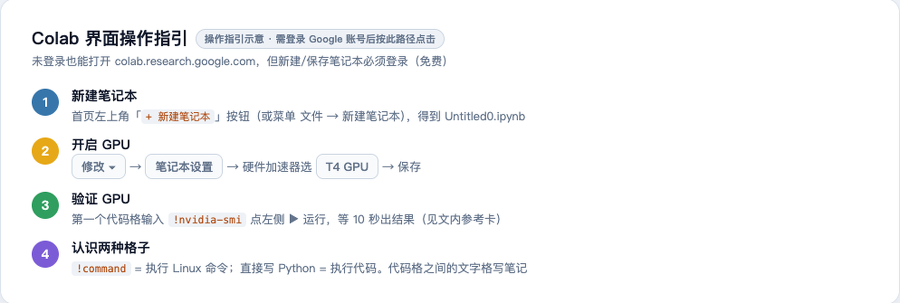
新建后会得到一个 Untitled0.ipynb——这就是你的训练环境，一个跑在 Google 服务器上的 Jupyter 笔记本。
Java 视角：.ipynb ≈ 一个可以一段一段执行并保留内存状态的交互式运行台，类似 IDEA 里可单行求值的 Evaluate 窗口，但整个文件就是程序本身。
二、开启 GPU
Colab 默认不带 GPU（CPU 模式），必须手动切换。路径：修改 → 笔记本设置 → 硬件加速器 → T4 GPU → 保存。
2.1 检查 GPU：你的第一行代码
!nvidia-smi! 开头表示执行 Linux 命令（不是 Python）。GPU 正常时你会看到 T4 信息表；没有 GPU 时看到的报错，我在本机实机复现了——先认清它：
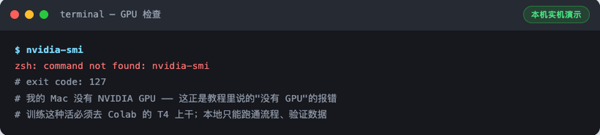
nvidia-smi 直接 command not found（exit 127）。在 Colab 上看到它 = GPU 没开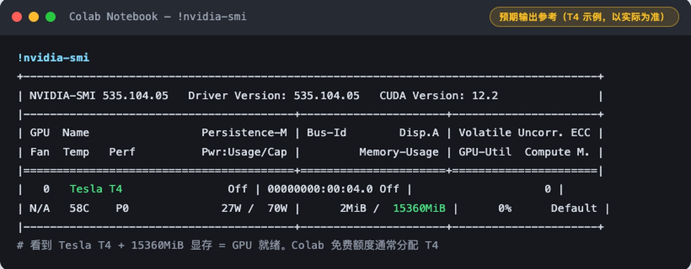
Colab 真实运行截图（2026-09-22 实机，可与参考卡逐项对照）：
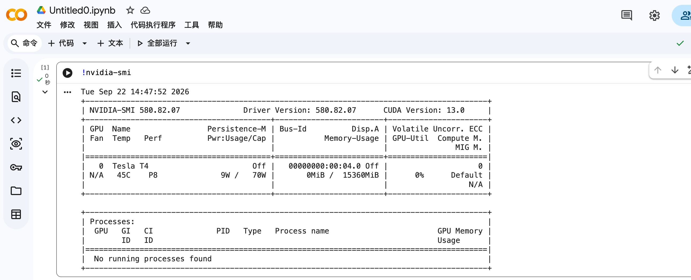
如果报command not found，回到修改 → 笔记本设置确认真选了 GPU，保存后重新运行第一格代码。
三、理解 Colab——你现在拥有一台「云电脑」
这一步值得花 5 分钟想清楚架构，后面所有操作才不会迷路：
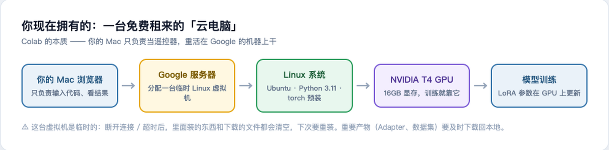
- 你的 Mac 不参与训练，只负责发代码、看输出；
- 那台 Linux 虚拟机是临时的——断开连接或闲置超时后，装的东西、下载的模型全部清空；
- 所以 Day2 训练出的 LoRA Adapter 要及时下载回本地，不然就没了。
Java 视角：相当于租了台按小时计费的云服务器（ECS），只不过 Colab 免费给你几小时，而且浏览器即开即用。
四、安装 Python 环境
Colab 自带 Python，不用装，只需确认版本 + 升级 pip：
!python --version
!pip install --upgrade pip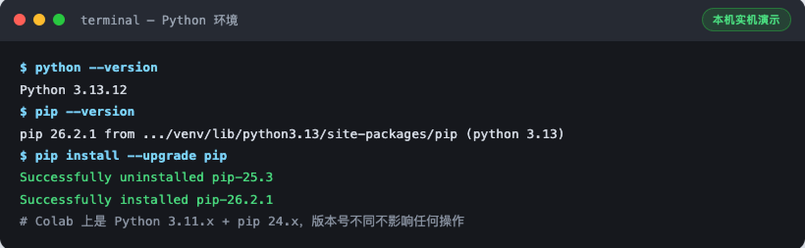
Java 视角：pip ≈ Maven——声明依赖、从仓库拉包。区别是 pip 装在「当前虚拟环境」里，相当于每个项目一个独立的本地 .m2 仓库。
五、安装 LLaMA-Factory
5.1 什么是 LLaMA-Factory？
微调一个模型，裸写需要：数据读取、模型加载、LoRA 配置、训练循环、保存恢复……几百行代码。LLaMA-Factory（GitHub 75k star）把这些全部封装成「数据 + 配置 + 一条命令」：
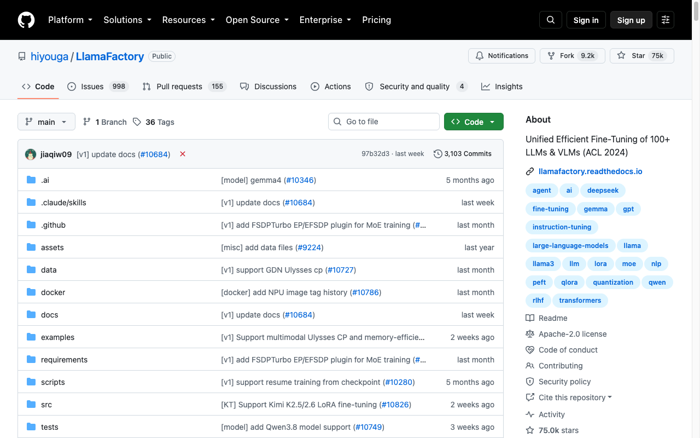
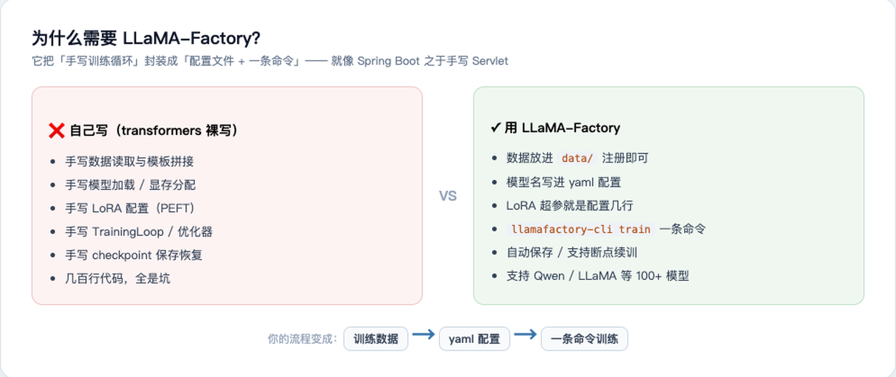
5.2 克隆仓库
!git clone https://github.com/hiyouga/LLaMA-Factory.git
%cd LLaMA-Factory先看一个真实踩坑：国内网络直连 GitHub HTTPS 经常超时，我在本机实测就挂了：
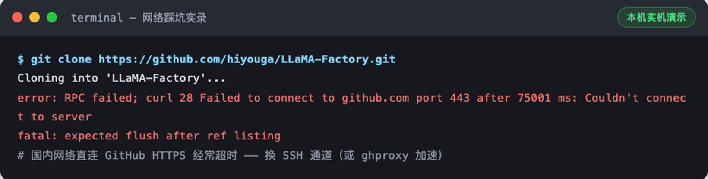
解决办法：换 SSH 通道（或 ghproxy 等加速前缀）。换 SSH 后成功：
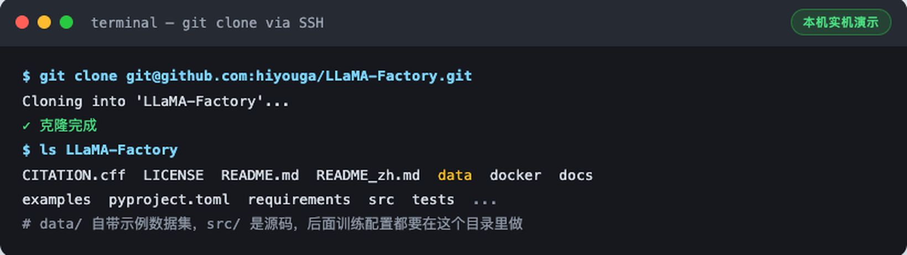
本机练习时遇到 HTTPS 超时就换 SSH；Colab 到 GitHub 的网络一般很好，直接 !git clone https://... 即可。
Colab 里实际克隆的样子（2026-09-22 实机：28,386 个对象 / 13.80 MiB / 21.41 MiB/s，一次成功无需换通道）：
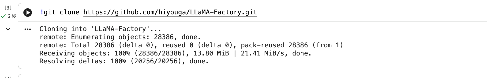
5.3 安装
!pip install -e .-e 表示可编辑安装（源码模式），装完后 llamafactory-cli 命令全局可用。需要下载 torch 等 130+ 个包，5~20 分钟，去接杯水：
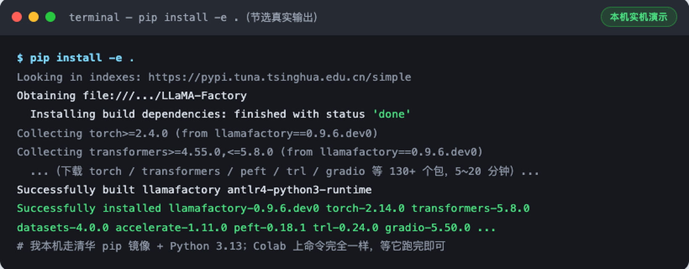
踩坑提示：中途报错九成是网络（换镜像：pip config set global.index-url https://pypi.tuna.tsinghua.edu.cn/simple）或 Python 版本（LLaMA-Factory 要求 ≥3.11）。重跑一次!pip install -e .会接着装。
六、检查 LLaMA-Factory
安装完必须验证，一条命令：
!llamafactory-cli version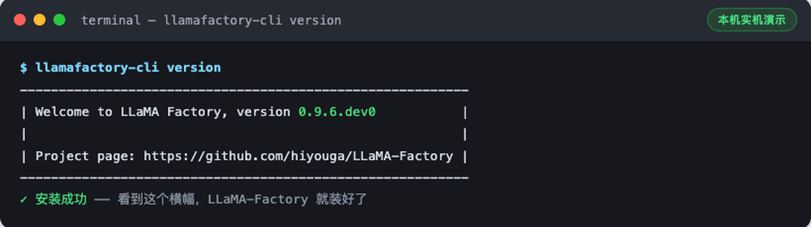
看到 Welcome to LLaMA Factory 横幅就是成了。没看到横幅之前，不要继续后面的步骤——后面每一步都依赖它。
七、安装模型依赖
!pip install transformers datasets accelerate peft bitsandbytes sentencepiece如果你严格按顺序执行，pip install -e . 其实已经把大部分装好了，输出会是这样的 already satisfied：
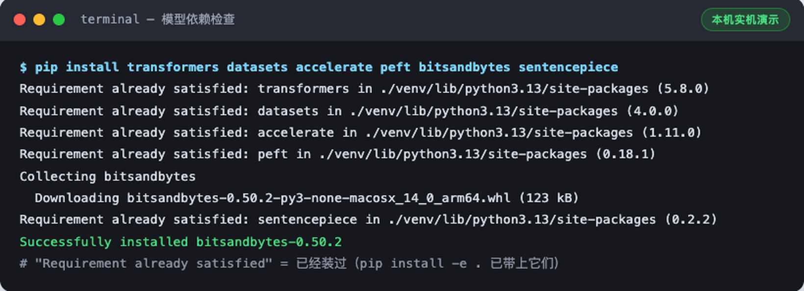
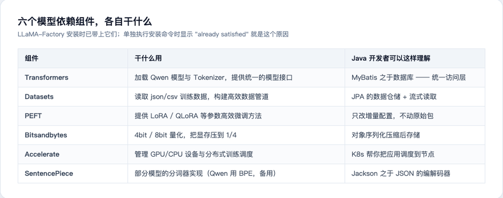
为什么显式再装一遍？教学上这一步是让你知道每个库的存在；工程上它保证版本不低于要求。重复执行 pip install 是幂等的，不会装坏。
八、下载第一个 Qwen 模型
8.1 为什么第一次不要 7B
第一次微调的目标是跑通链路，不是刷效果。3B（30 亿参数）在 T4 16GB 上 LoRA 微调绰绰有余：
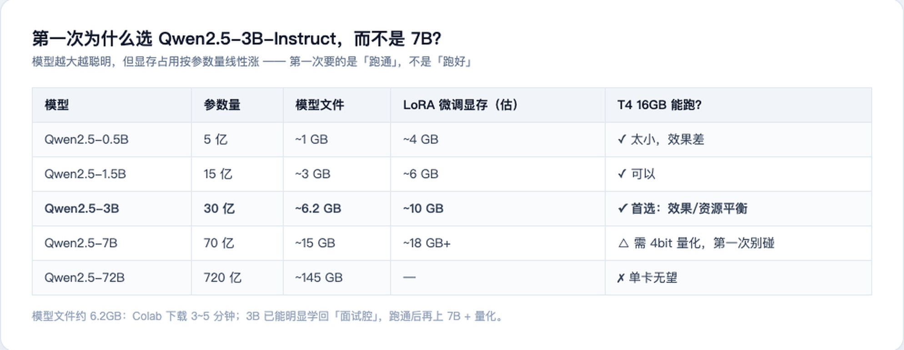
8.2 在哪里找它
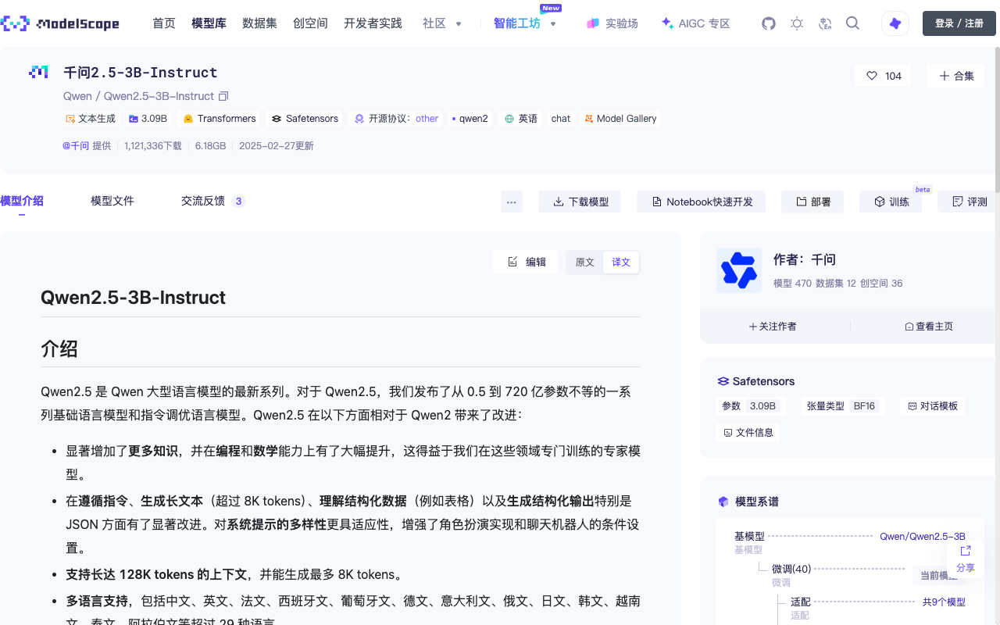
8.3 第一次只下载 Tokenizer 验证通路
完整模型 6GB+，第一次先下载分词器（几 MB）验证「模型仓库 → 你的机器」这条路是通的：
from transformers import AutoTokenizer
model_name = "Qwen/Qwen2.5-3B-Instruct"
tokenizer = AutoTokenizer.from_pretrained(model_name)
print("下载成功")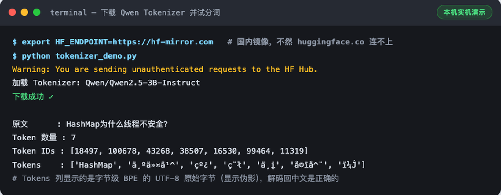
踩坑提示：Colab 上直接跑通常没问题；本机/国内服务器from_pretrained超时的话，加环境变量HF_ENDPOINT=https://hf-mirror.com。
九、准备你的第一份训练数据
现在开始最重要的部分。核心认知：训练「行为」，不是训练「知识」。不要在数据里塞知识问答，而要训练回答的方式：
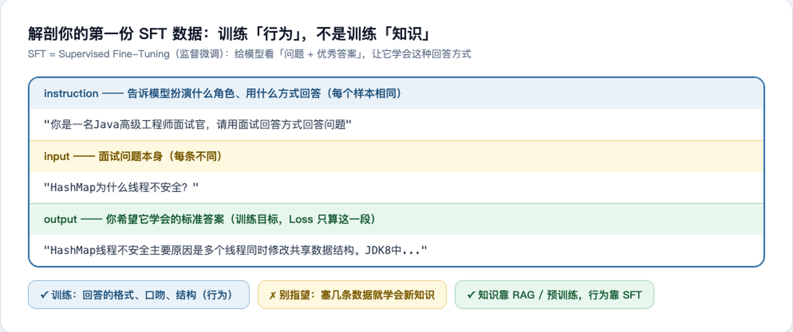
在 Colab 新建文本文件 java_interview.json：
[
{
"instruction": "你是一名Java高级工程师面试官，请用面试回答方式回答问题",
"input": "HashMap为什么线程不安全？",
"output": "HashMap线程不安全主要原因是多个线程同时修改共享数据结构。JDK8中HashMap采用数组+链表+红黑树结构，但没有加锁。在并发put时可能导致数据覆盖、链表结构异常等问题。因此多线程环境应该使用ConcurrentHashMap。"
},
{
"instruction": "你是一名Java高级工程师面试官，请用面试回答方式回答问题",
"input": "ConcurrentHashMap JDK8如何保证线程安全？",
"output": "JDK8 ConcurrentHashMap取消Segment分段锁设计，采用CAS+synchronized实现。空桶插入使用CAS，非空桶锁住头节点，通过Node链表或者TreeBin保证并发安全。同时支持扩容迁移。"
}
]这就是 Alpaca 格式——LLaMA-Factory 默认认识的三字段格式。正式训练建议扩到 100~1000 条，风格越一致越好。
Java 视角：instruction 像 Javadoc 上的角色约定，input 是方法入参，output 是期望返回值——一套「带期望输出的测试用例集」，训练就是让模型对这些用例的「实现」无限逼近期望输出。
十、创建数据目录并检查
在 LLaMA-Factory 目录下建 data/ 并上传数据文件：
!mkdir -p data # 上传 java_interview.json 到 data/ 目录
!ls data放好后做两个必须的检查（都真实跑过）：
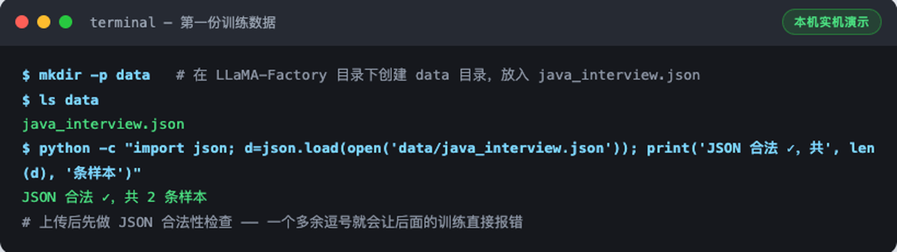
from datasets import load_dataset
ds = load_dataset("json", data_files="data/java_interview.json", split="train")
print(ds)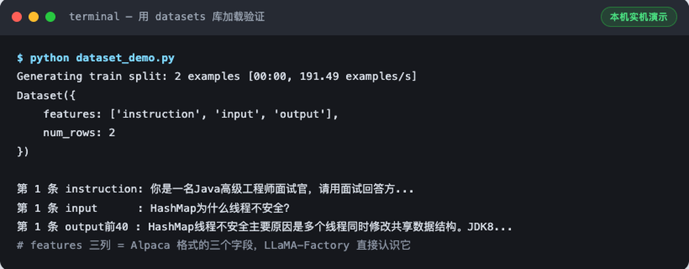
十一、今天先不要训练
环境和数据都好了，为什么忍住不练？因为第一次训练前必须先看懂这条链路——Day2 你敲的每个配置，都对应链路上的一环：
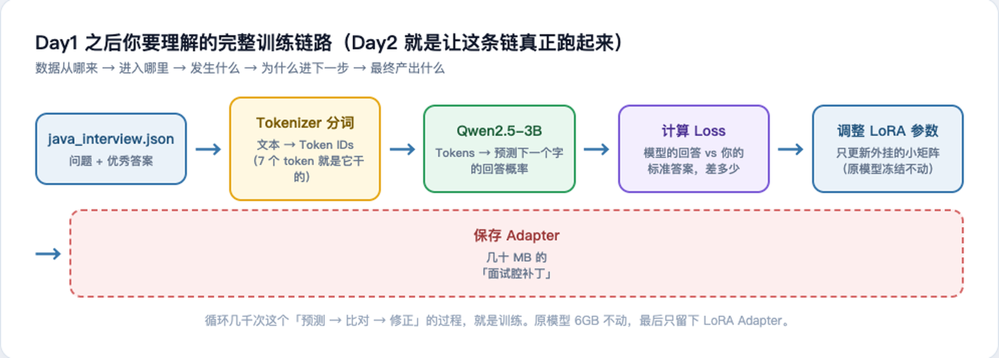
- 数据：你的 2 条「问题+优秀答案」从 JSON 读入；
- Tokenizer：把文字变成 Token IDs（第八部分那 7 个 ID 就是它干的）；
- Qwen 模型：根据上文预测下一个 token 的概率分布；
- Loss：模型预测 vs 你的标准答案，算差多少（Loss 只在 output 段计算）；
- 调 LoRA 参数：只更新外挂的小矩阵，原模型 60 亿参数全程冻结；
- 保存 Adapter：循环几千次后，把学到的「面试腔」存成几十 MB 的补丁文件。
Java 视角：LoRA Adapter ≈ 不修改原始 jar 包、只外挂一个增强切面——原类（基础模型）只读，增量逻辑（Adapter）独立打包部署，随时可挂可摘。
Day1 完成标准 & 明天 Day2
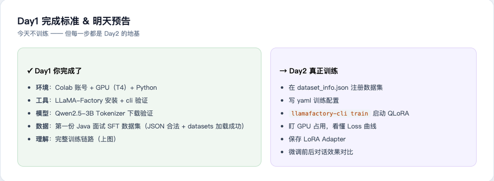
| 板块 | 完成项 |
|---|---|
| 环境 | ✅ Colab 账号 ✅ GPU（T4） ✅ Python 环境 |
| 工具 | ✅ LLaMA-Factory 安装并验证 ✅ 六个模型依赖就位 |
| 模型 | ✅ Qwen2.5-3B Tokenizer 下载验证（6GB 模型文件 Day2 训练前拉取即可） |
| 数据 | ✅ 第一份 Java 面试 SFT 数据集（JSON 合法 + datasets 加载成功） |
| 理解 | ✅ 完整训练链路的每一环 |
踩坑速查表
| 坑 | 现象 | 解法 |
|---|---|---|
| GitHub HTTPS 超时 | curl 28 ... port 443 | 换 SSH 克隆或加速前缀（实测见 5.2） |
| HF 下载超时 | from_pretrained 卡住 | HF_ENDPOINT=https://hf-mirror.com（实测见 8.3） |
| 忘开 GPU | command not found: nvidia-smi | 修改 → 笔记本设置 → T4 GPU → 重跑（实测见 2.2） |
| Colab 临时性 | 隔天装的东西全没了 | 正常现象；产物及时下载回本地 |
| JSON 多逗号 | Day2 读数据即崩 | 先跑 json.load 校验（见第十部分） |